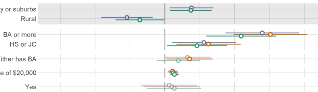
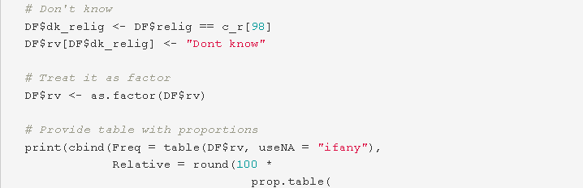
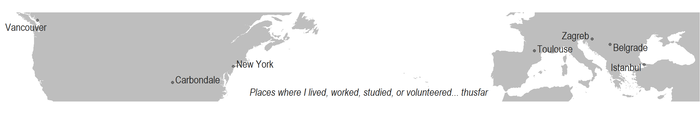

Sociology is my passion and profession. I sincerely believe it is an outstanding discipline that allows for combined study of theoretical and philosophical concepts on one side, with practical and applied research, on the other, resulting in a holistic comprehension of society or specific issues – sometimes even providing (gasp) functional solutions.
Data science, or something closely relating to it, has been a constant in my life since elementary school, though I didn’t completely articulate it. It was mostly after I discovered R, that I realized how much I love tackling numbers, code, and statistics. And it’s seriously threatening to overtake sociology.
Besides international research experience and very broad education, I also bring dedication to creating adaptable systems and reproducible practices that stay after me. Curiosity and almost endless passion for research and data science is what motivates me. I enjoy understanding and sharing the meaning that underlies data—especially through visualizations.
|
Projects  |
R functions  |
|---|
Actively searching for opportunities and challenges where I could contribute and grow, I would consider almost anything almost anywhere in the world (i.e. I’m job-hunting). If you like what you see, want me to join your team, work with me, have a comment, critique, or advice – let’s talk!
Suggested topics: sociology, data science, research, data analysis, user experience, qualitative methods, survey, content analysis, people analytics,… 